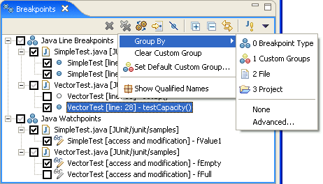
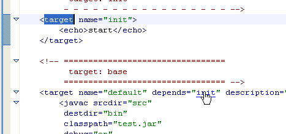

Locks and deadlocks
The locks owned by a thread as well as the lock a thread is waiting for can be displayed in-line in the Debug view. Toggle the Show Monitors action in the Debug view drop-down menu to turn the option on/off. Threads and locks involved in a deadlock are rendered in red with deadlock overlays.

Navigating stack traces
Copy and paste stack traces into the Java Stack Trace Console and use hyperlinks to navigate the traces. The Java Stack Trace Console can be opened from the Open Console drop-down menu in the Console view.

'toString()' in-line
The 'toString()' for a variable can be displayed in the Variables view tree as well as in the details area. The Variables view can be configured to display 'toString()' in-line for all variables, only for variables that have custom detail formatters, or only in the details area, by selecting the Variable Details... action in the view drop-down menu.

Improved breakpoint groups
Breakpoint groups have been enhanced to support nested groups and prevent the loss of user defined groups when the group settings are changed in the Breakpoints view. Use the Group By cascade menu to quickly change between standard groupings - breakpoint types, files, projects, and custom groups. Custom groups are used to group breakpoints into arbitrary logical sets that can then be enabled/disabled with one click. Use the Advanced... option to configure nested groupings.

Console EOF
Console encoding
J2SE5.0 varargs
Hyperlink support
The Ant Editor supports hyperlink navigation. It is enabled by default and the key modifier can be set in the Ant Editor Navigation preferences

Annotations for external buildfiles
"Show source of selected elements only"
Folding context menu
Improved navigation
Open external documentation
An open external documentation action (default keybinding is Shift-F2) has been added to the Ant Editor. To activate, place your cursor within the Ant task (or type etc.) that you wish to view the Apache Ant external documentation. An external browser is opened on the appropriate documentation provided via the online Apache Ant manual.

Separate JRE input handler